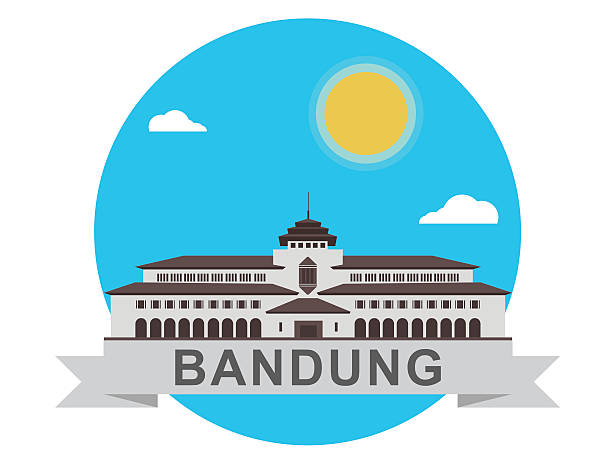

 Kota Bandung adalah ibu kota Provinsi Jawa Barat yang sekaligus menjadi pusat pemerintahan dan perekonomian dari Provinsi Jawa Barat, Indonesia. Kota Bandung juga merupakan kota terbesar ketiga di Indonesia setelah Jakarta dan Surabaya. Bandung merupakan kota terpadat kedua di Indonesia setelah Jakarta dengan kepadatan mencapai 15.051 jiwa/km2. Terletak 140 km di sebelah tenggara Jakarta, Bandung merupakan kota terbesar di bagian selatan pulau Jawa. Bandung merupakan bagian dari Cekungan Bandung (Bandung Raya), kawasan metropolitan terbesar ketiga di Indonesia setelah Jabodetabek dan Surabaya Metropolitan Area. Kota Bandung berbatasan langsung dengan Cimahi dan Kabupaten Bandung Barat di sisi barat dan utara;Kabupaten Bandung di sisi timur dan selatan
Kota ini tercatat dalam berbagai sejarah penting yang pernah terjadi di Indonesia, salah satunya sebagai tempat berdirinya sebuah perguruan tinggi teknik pertama di Indonesia (Technische Hoogeschool te Bandoeng–TH Bandung, sekarang Institut Teknologi Bandung–ITB),[5] lokasi ajang pertempuran pada masa kemerdekaan,[6] serta pernah menjadi tempat berlangsungnya Konferensi Asia-Afrika 1955,[7] suatu pertemuan yang menyuarakan semangat anti kolonialisme, bahkan Perdana Menteri India Jawaharlal Nehru dalam pidatonya mengatakan bahwa Bandung adalah ibu kotanya Asia-Afrika.
Kota kembang merupakan sebutan lain untuk kota ini, karena pada zaman dahulu kota ini dinilai sangat cantik dengan banyaknya pohon dan bunga-bunga yang tumbuh di sana. Selain itu Bandung dahulunya disebut juga dengan Paris van Java karena keindahannya. Selain itu kota Bandung juga dikenal sebagai kota belanja, dengan mall dan factory outlet yang banyak tersebar di kota ini, dan saat ini berangsur-angsur kota Bandung juga menjadi kota wisata kuliner. Dan pada tahun 2007, konsorsium beberapa LSM internasional menjadikan kota Bandung sebagai pilot project kota terkreatif se-Asia Timur.[10] Saat ini kota Bandung merupakan salah satu kota tujuan utama pariwisata dan pendidikan.